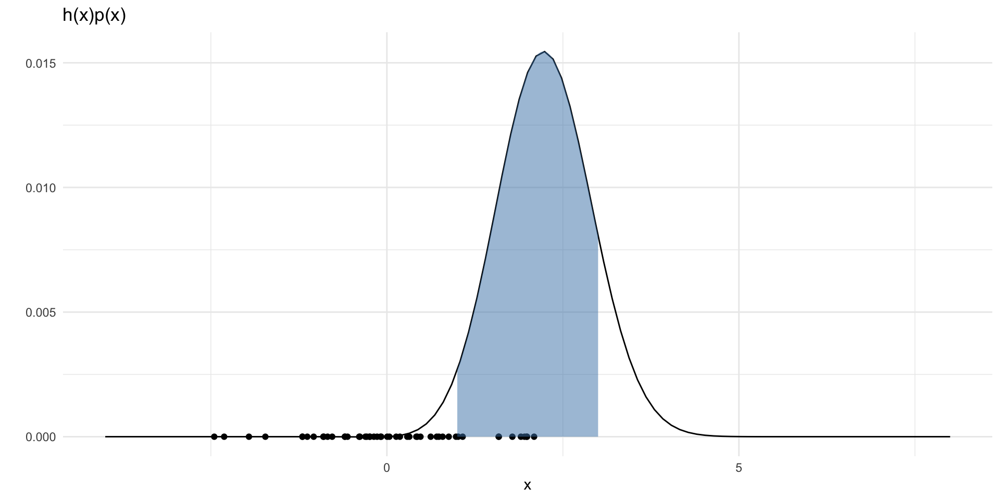
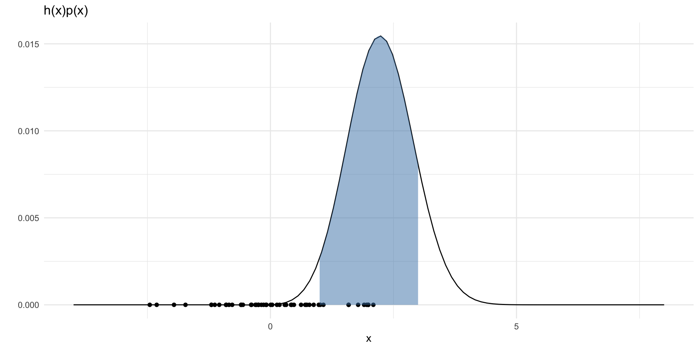
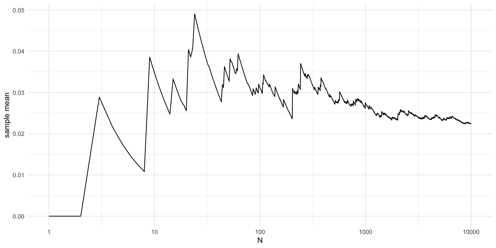
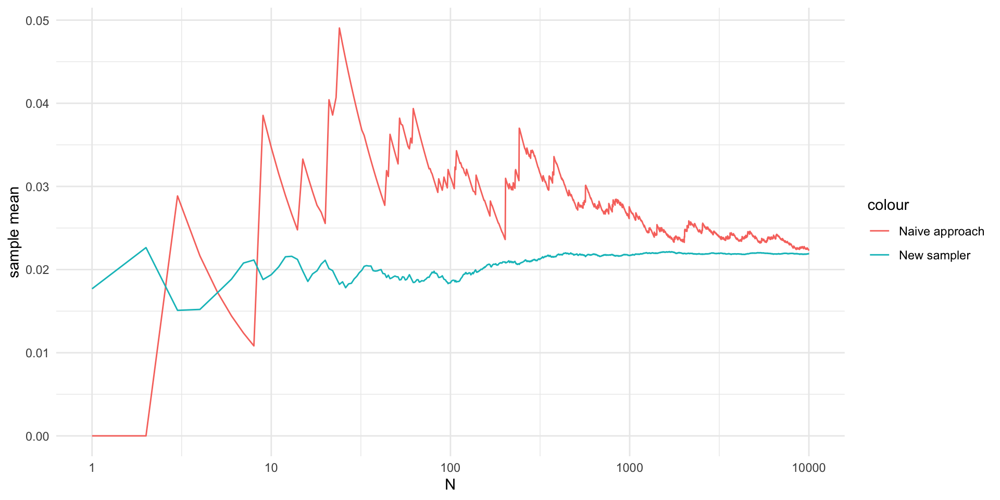

Duke University
\[ V = \int_1^3 x~e^{-\frac{(x-4)^2}{2}} \frac{1}{\sqrt{2\pi}} e^{-\frac{x^2}{2}} dx \] Here, \(p(x)\) is the standard normal density and
\[ h(x) = I(x \in (1, 3))~x~e^{-\frac{(x-4)^2}{2}} \]
So we can view this as \(\mathbb{E}~h(x) \approx \frac{1}{N} \sum_{i=1}^N h(x)\) where \(X\) is standard normal.

set.seed(2)
hp = function(x) {
h(x) * dnorm(x)
}
N = 50
points = data.frame(x = rnorm(N, 0, 1),
y = rep(0, N))
ggplot() +
xlim(-4, 8) +
geom_function(fun = hp) +
geom_point(data = points, aes(x = x, y = y)) +
labs(x = "x", y = "") +
theme_minimal() +
labs(title = "h(x)p(x)") +
stat_function(fun = hp,
xlim = c(1,3),
geom = "area",
fill = "steelblue", alpha = 0.5)
library(magrittr)
set.seed(2)
N = 10000
x = rnorm(N, 0, 1)
h1 = function(x) {
z = h(x)
z[x < 1] = 0
z[x > 3] = 0
return(z)
}
estimate = vector(length = N)
for (n in 1:N) {
estimate[n] = mean(h1(x[1:n]))
}
V = data.frame(x = seq(N),
y = estimate)
V %>%
ggplot(aes(x = x, y = y)) +
geom_line() +
theme_minimal() +
labs(x = "N", y = "sample mean") +
scale_x_continuous(trans='log10')\[ V = \frac{e^{-4}}{\sqrt{2}} \int_1^3 x \frac{1}{\sqrt{2\pi(1/2)}} e^{-\frac{(x-2)^2}{2(1/2)}} \] - So we can approximate \(V\) by
\[ \frac{e^{-4}}{\sqrt{2}}~\frac{1}{N}\sum_{i = 1}^N X_i~I(X_i\in(1,3)) \]
where \(X_i \overset{\mathrm{iid}}{\sim} N(2, (1/\sqrt{2})^2))\)

library(magrittr)
set.seed(2)
N = 10000
x = rnorm(N, 2, sqrt(1/2))
hnew = function(x) {
x[x < 1] = 0
x[x > 3] = 0
return(x)
}
C = exp(-4) / sqrt(2)
# C = sqrt(1/2)
estimate = vector(length = N)
for (n in 1:N) {
estimate[n] = mean(hnew(x[1:n]))
}
estimate = estimate*C
V2 = data.frame(x = seq(N),
y = estimate)
V %>%
ggplot(aes(x = x, y = y)) +
geom_line(aes(color = "Naive approach")) +
geom_line(data = V2, aes(x = x, y = y, col = "New sampler")) +
theme_minimal() +
labs(x = "N", y = "sample mean") +
scale_x_continuous(trans='log10')\[ V = \int \frac{h(x)p(x)}{q(x)} q(x) dx \] for any density \(q\) with \(q(x) > 0\) on \(\mathcal{X} = \{x : h(x)p(x) \neq 0\}\)
\[ \hat{V}_q = \frac{1}{N} \sum_{i =1}^N w_q(X_i)h(X_i) \]
where \(w_q(x) = p(x) / q(x)\) and \(X_i \overset{\mathrm{iid}}{\sim} q\). \(w_q(x)\) is called the “importance weight”.
\[ \sigma^2_q = \mathbb{V}ar[\hat{V}_q] = \int \frac{h(x)p(x)}{q(x)}h(x)p(x)dx - V^2 \] If \(h > 0\) on \(\mathcal{X}\), then \(\sigma_q^2\) is minimized at \(q(x) \propto h(x)p(x)\).
fundamentally, a trick to help compute expectations in Monte Carlo integration.
the strategy of sampling from \(q\) different from \(p\) is called importance sampling.
\(q\) is the “importance density”.
\(w_q(X_i)\) is the “importance weight” of the sampled \(X_i\)
the optimal \(q(x) \propto h(x)p(x)\) choice is never there – since then the problem becomes trivial!
but one tries to choose \(q(x)\) such that \(\sigma^2_q\) is small
Suppose we want to compute \(E_p[h(x)]\), but we only know \(p(x) = \frac{1}{c} g(x)\). That is, we know \(p(x)\) up to some proportionality constant.
\[ E_p[h(x)] = \frac{\int h(x) g(x) dx}{\int g(x) dx} \]
and we have two integrals we wish to approximate with importance sampling.
The denominator can be written, \(\hat{c}_q = \frac{1}{N} \sum_{i=1}^Nw_q^*(X_i)\), where \(w_q^*(x) = g(x) / q(x)\) and \(X_i \sim q(x)\).
The numerator can be written, \(\frac{1}{N} \sum_{i=1}^N w_q^*(X_i) h(X_i)\), where again \(X_i \sim q(x)\).
Hence a simulation consistent estimate of the whole integral \(V\) is:
\[ \hat{V}_q = \frac{\sum_{i = 1}^N w_q^*(X_i)h(X_i)}{\sum_{i = 1}^N w_q^*} \]
A concise review of importance sampling: Tokdar, Surya T., and Robert E. Kass. “Importance sampling: a review.” Wiley Interdisciplinary Reviews: Computational Statistics 2.1 (2010): 54-60.
A natural extension to handle multi-modality: Neal, Radford M. “Annealed importance sampling.” Statistics and computing 11 (2001): 125-139.
Blog post by Radford Neal on “The harmonic mean of the likelihood: worst Monte Carlo method ever”
Alternative introduction with some motivation: Bugallo, Monica F., et al. “Adaptive importance sampling: The past, the present, and the future.” IEEE Signal Processing Magazine 34.4 (2017): 60-79.
The best parts of these slides were adapted from Prof. Surya Tokdar’s notes on Monte Carlo integration.